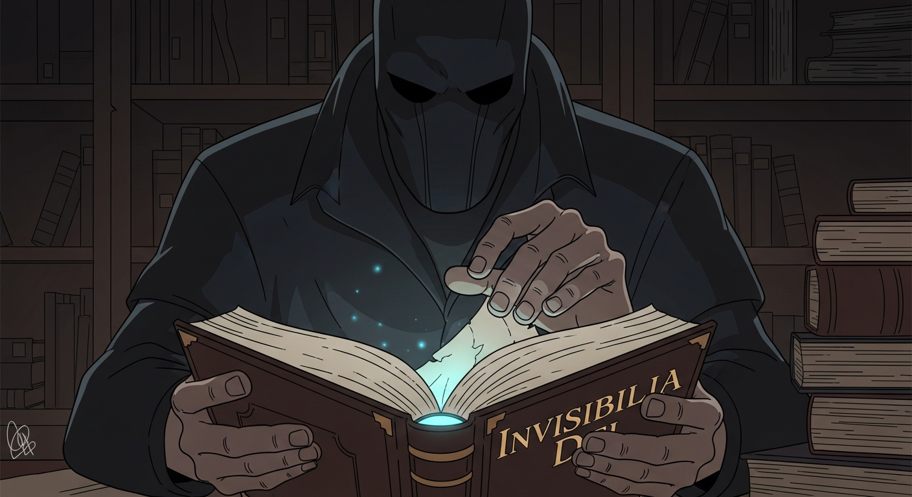
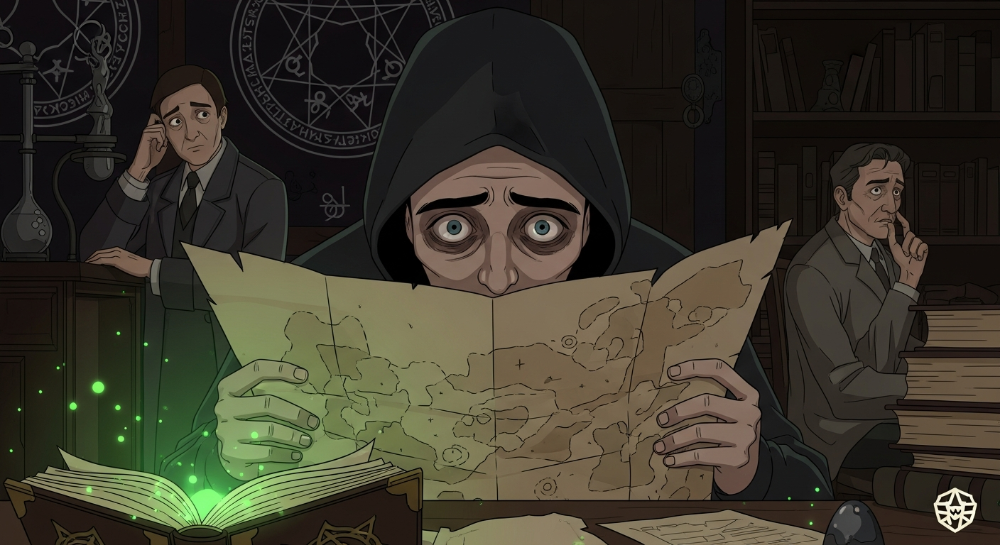

I felt it again, that crawling unease. Agrippa's *Invisibilia Dei* was unnerving enough, but the *Picatrix*... that was something else. Tradition holds it contains 'The Alchemist's Last Secret,' but I sensed something...malevolent. A whisper of *Evil Dead*, of all things. Then, a fleeting image of Dee—warning me. 'Find Alexander F,' he seemed to say. Before delving deeper, I knew I had to find him.

Dee's warning echoed: Find Alexander F. *Arthur C. Clarke's Mysterious World*…Alexander always loved that series. Each location was a test, a gauntlet of moral compromise—power offered, then rescinded. Finally, his lab. No spell, no formula. Just the chilling truth: the Alchemist's secret is knowing when *not* to play God.